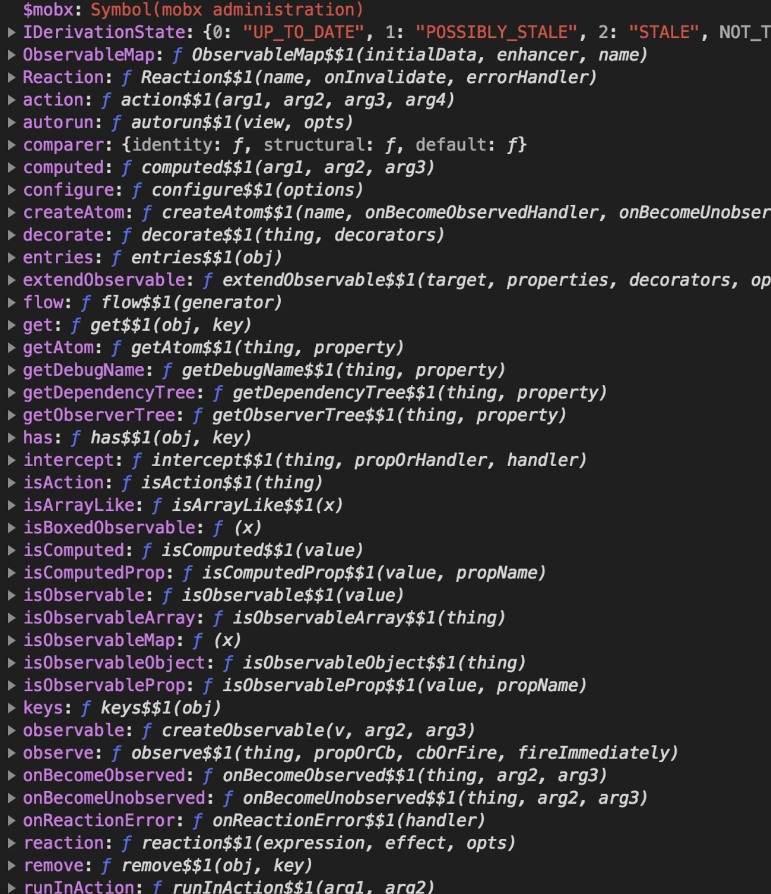
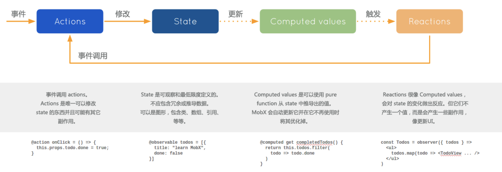
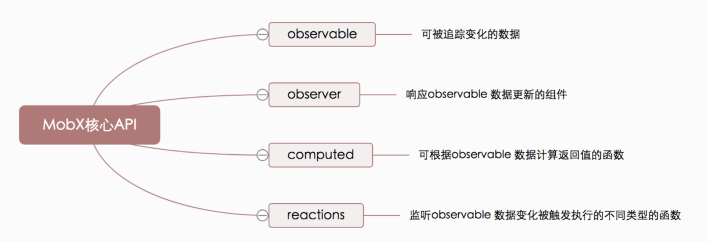

# 一、认识MobX
打印
mobx，看看mobx中有什么

MobX的整个流程

MobX 和 Redux 的比较
Redux是单一数据源，而MobX往往是多个store。MobX可以根据应用的UI、数据或业务逻辑来组织store，具体如何进行需要你自己进行权衡Redux store使用普通的JavaScript对象结构，MobX将常规JavaScript对象包裹，赋予observable的能力，通过隐式订阅，自动跟踪observable的变化。MobX是观察引用的，在跟踪函数中（例如：computed value、reactions等等），任何被引用的observable的属性都会被记录，一旦引用改变，MobX将作出反应。注意，不在跟踪函数中的属性将不会被跟踪，在异步中访问的属性也不会被跟踪Redux的state是只读的，只能通过将之前的state与触发的action结合，产生新的state，因此是纯净的（pure）。而MobX的state即可读又可写，action是非必须的，可以直接赋值改变，因此是不纯净的（Impure）Redux需要你去规范化你的state，Immutable数据使Reducer在更新时需要将状态树的祖先数据进行复制和更新，新的对象会导致与之connect的所有UI组件都重复渲染。因此Redux state不建议进行深层嵌套，或者需要我们在组件中用shouldComponentUpdate优化。而MobX只自动更新你所关心的，不必担心嵌套带来的重渲染问题
redux管理的是 (STORE->VIEW->ACTION) 的整个闭环，而mobx只关心STORE->VIEW的部分
优点
- 基于运行时的数据订阅
mobx的数据依赖始终保持了最小，而且还是基于运行时。而如果用redux，可能一不小心就多订阅或者少订阅了数据。所以为了达到高性能，我们需要借助PureRenderMixin以及reselect对selector做缓存 - 通过 OOP 的方式组织领域模型 (domain model)
OOP的方式在某些场景下会比较方便，尤其是容易抽取domain model的时候。进而由于mobx支持引用的方式引用数据，所以可以非常容易得形成模型图 (model graph )，这样可以更好地理解我们的应用。 - 修改数据方便自然
mobx是基于原生的JavaScript对象、数组和Class实现的。所以修改数据不需要额外语法成本，也不需要始终返回一个新的数据，而是直接操作数据
缺点
缺最佳实践和社区 mobx 比较新，遇到的问题可能社区都没有遇到过。并且，mobx 并没有很好的扩展/插件机制
随意修改 store
我们都知道 redux 里唯一可以改数据的地方是 reducer，这样可以保证应用的安全稳定；而 mobx 可以随意修改数据，触发更新，给人一种不安全的感觉
- 最新的
mobx 2.2加入了action的支持。并且在开启strict mode之后，就只有action可以对数据进行修改，限制数据的修改入口。可以解决这个问题
- 最新的
逻辑层的限制
- 如果更新逻辑不能很好地封装在
domain class里，用redux会更合适。另外，mobx缺类redux-saga的库，业务逻辑的整合不知道放哪合适
- 如果更新逻辑不能很好地封装在
# 二、核心API

# 2.1 @observable
Observable值可以是JS基本数据类型、引用类型、普通对象、类实例、数组和映射。其修饰的state会暴露出来供观察者使用
// Observable 值可以是JS基本数据类型、引用类型、普通对象、类实例、数组和映射
@observable title = 'this is about page'
@observable num = 0
// 计算值(computed values)是可以根据现有的状态或其它计算值衍生出的值
@computed get getUserInfo(){
return `我是computed经过计算的getter,currenct num:${this.num}`
}
// 注意：当你使用装饰器模式时，@action 中的 this 没有绑定在当前这个实例上，要用过 @action.bound 来绑定 使得 this 绑定在实例对象上
@action.bound add(){
this.num ++
}
@action.bound reduce(){
this.num --
}
# 2.2 observer
可以用作包裹
React组件的高阶组件。 在组件的render函数中的任何已使用的observable发生变化时，组件都会自动重新渲染。 注意observer是由"mobx-react"包提供的，而不是mobx本身
@Observer是一个注解，本质上是用mobx.autorun包装了组件的render函数以确保任何组件渲染中使用的数据变化时都可以强制刷新组件
# 2.3 @computed
- 计算值(
computed values)是可以根据现有的状态或其它计算值衍生出的值 - 用于获取由基础
state衍生出来的值。如果基础值没有变，获取衍生值时就会走缓存，这样就不会引起虚拟 DOM 的重新渲染
getter：获得计算得到的新state并返回。setter： 不能用来直接改变计算属性的值，但是它们可以用来作“逆向”衍生。
通过
@computed + getter函数来定义衍生值
class Foo {
@observable length = 2;
@computed get squared() {
return this.length * this.length;
}
set squared(value) { // 这是一个自动的动作，不需要注解
this.length = Math.sqrt(value);
}
}
# 2.4 @actions
- 只有在
actions中，才可以修改Mobx中state的值- 注意：当你使用装饰器模式时，
@action中的this没有绑定在当前这个实例上，要用过 [@action.bound](mailto:@action.bound)来绑定 使得this` 绑定在实例对象上
- 通过引入
mobx定义的严格模式，强制使用action来修改状态
import {configure} from 'mobx';
configure({ enforceActions: 'always' }) // 开启严格模式
@action.bound add(){
this.num ++
}
@action.bound reduce(){
this.num --
}
# 2.5 autorun
- 当可观察对象中保存的值发生变化时，可以在
mobx.autorun中被观察到。observable的值初始化或改变时，自动运行 - 如果你想响应式的产生一个可以被其它
observer使用的值，请使用@computed，如果你不想产生一个新值，而想要达到一个效果，请使用autorun。 举例来说，效果是像打印日志、发起网络请求等这样命令式的副作用
# 2.6 reactions
Reactions和计算值很像，但它不是产生一个新的值，而是会产生一些副作用，比如打印到控制台、网络请求、递增地更新React组件树以修补DOM、等等。 简而言之，reactions在 响应式编程和命令式编程之间建立沟通的桥梁
# 2.7 Flow
用法:
flow(function* (args) { })
flow()接收generator函数作为它唯一的输入
import { configure } from 'mobx';
// 不允许在动作外部修改状态
configure({ enforceActions: true });
class Store {
@observable githubProjects = [];
@observable state = "pending"; // "pending" / "done" / "error"
fetchProjects = flow(function* fetchProjects() { // <- 注意*号，这是生成器函数！
this.githubProjects = [];
this.state = "pending";
try {
const projects = yield fetchGithubProjectsSomehow(); // 用 yield 代替 await
const filteredProjects = somePreprocessing(projects);
// 异步代码自动会被 `action` 包装
this.state = "done";
this.githubProjects = filteredProjects;
} catch (error) {
this.state = "error";
}
})
}
# 三、计数器例子
import React, { Component } from 'react';
import { observer } from 'mobx-react';//结合react
import { observable, autorun,computed } from 'mobx';
// 定义数据store
class Counter {
@observable number = 0;
@computed get msg() {
return 'number:' + this.number
}
// 用action改变数据，避免混乱
@action increment(){
this.number ++
}
@action decrement: () => {
this.number --
}
}
var store = new Counter()
// 把属性注入react组件
@observer
class App extends Component {
render() {
return (<div>
{ store.msg } <br />
<button onClick={this.handleInc}> + </button>
<button onClick={this.handleDec}> - </button>
</div>);
}
handleInc() {
store.increment();
}
handleDec() {
store.decrement();
}
}
ReactDOM.render(<App />, document.getElementById('root'));
# 四、应用案例
https://github.com/poetries/react-mobx-template
# 五、参考
文档学习 https://cn.mobx.js.org/